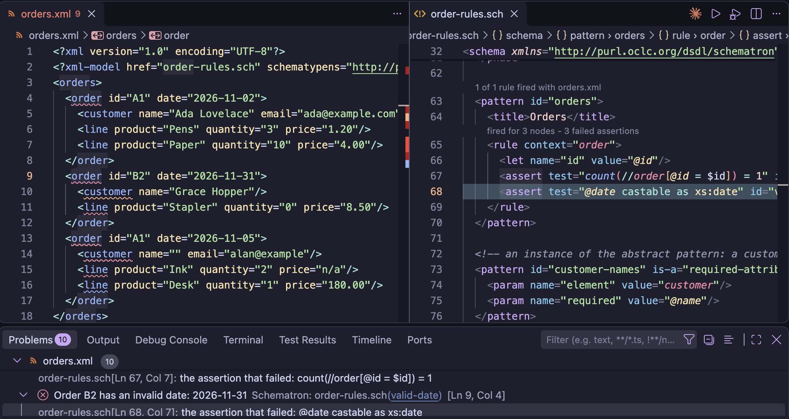

Schematron in VS Code
Schematron checks the things a schema language like XML Schema cannot easily say: that an order's date is a real date, that an identifier is unique, that if one element is present another must be. A Schematron schema is a set of rules, each with assertions written in XPath - which makes it a natural companion to XSLT, and to the same editor.

Writing a schema
Schematron files are checked as you edit them, with auto-completion and formatting. They are checked as
SchXslt2 runs them - the ISO Schematron processor that XSpec
uses - as ISO Schematron with an XSLT query binding, so with queryBinding="xslt4" the XPath in
a rule is checked as XPath 4.0. A schema written for Schematron 1.5 is reported, with a quick fix that
converts it to ISO Schematron.
Validating an XML file
With an XML file open, run Schematron: Validate. Each failed assertion and successful report is shown in
the Problems view and as a highlight in the XML, at the element or attribute it is about, with its message.
Its severity is the one the assertion gives, such as warning or info, and otherwise an error. A quick fix
takes you from a problem to the assertion in the schema that reported it. The schema used is the one an
xml-model processing instruction in the file names, or one you choose.
Debugging and testing rules
When a rule does not fire, or fires too often, the debugger can step through the rules and assertions as they run against an XML file. And Schematron rules, like XSLT, can be tested with XSpec: scenarios that check which assertions fail for a given input.
The details are in the user guide: Schematron and XSpec tests.
Common questions
Is there a Schematron editor for VS Code?
Yes. The XSLT/XPath extension edits Schematron with auto-completion, formatting and checking, validates XML files against a schema, and debugs and tests rules and assertions.
How do I validate XML with Schematron in VS Code?
Open the XML file and run Schematron: Validate from the Command Palette. Failed assertions appear in the
Problems view and in the editor. The schema is the one named by an xml-model processing
instruction in the file, or one you choose.
Which Schematron processor does it use?
SchXslt2, the ISO Schematron processor XSpec uses, run with the Saxon you configure.
Get the extension. Install XSLT/XPath for Visual Studio Code from the Marketplace.